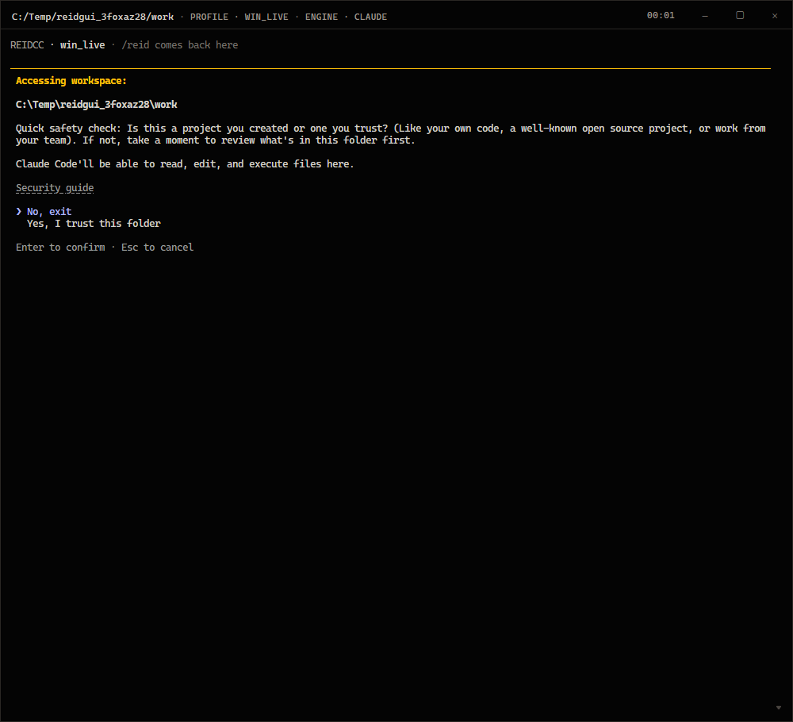

Reidcc
v0.1.1 · windows
Reidcc
v0.1.1 · windows
Reidcc
v0.1.1 · windows
Reidcc
v0.1.1 · windows
A launcher for Claude Code and Codex. Pick a folder and a profile, and your persona, memory and settings are already there.
Everything sits on one screen: the profile list, the profile's fields, your folder and the command it will run.

Or open a recent one. ctrl+o
Engine, model, sign-in, persona, memory and switches, saved in reid.json.
The session starts in its own window with your setup in place. ctrl+↵
Each session shows its folder, its profile, and how much context and limit you've used. Numbers, not adjectives.

Model, sign-in, persona, memory and switches. Make one per way you work.
Who the session is. Optional, plain Markdown in personas\.
Pinned facts and a dated journal, added to sessions with memory on.
One installer for your account, no admin rights. Your profiles and memory live in your own folder and survive every update and uninstall.